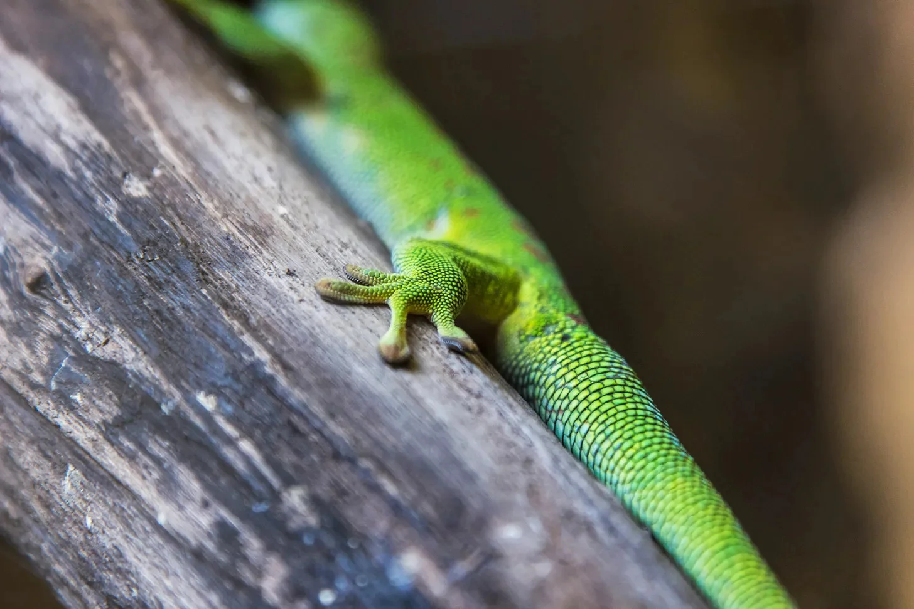

중력의 달인이라고 자칭하는 것의 문제점은 가끔 중력이 누가 진짜 주도권을 가지고 있는지 상기시켜 주기를 좋아한다는 것이다.
[The thing about being a self-proclaimed master of gravity is that gravity occasionally likes to remind you who’s really in charge.]
에메랄드빛 도마뱀은 반들반들한 대나무 벽에서 걸음을 멈추고, 아래에서 지켜보는 전혀 감동하지 않은 세 마리의 도마뱀 관객들을 향해 작은 발가락을 넓게 펼치며 멈춰 섰다. 그의 비늘은 열대의 태양 아래서 아침 이슬처럼 반짝였는데, 이는 현지 스파에서 최상급 귀뚜라미 15마리나 들인 그의 새로운 ‘비늘 관리 루틴'의 결과물이었다.
[The emerald green gecko paused mid-stride on the polished bamboo wall, his tiny toes spreading wide as he addressed his audience of three considerably unimpressed lizards below. His scales gleamed like fresh morning dew under the tropical sun – the result of his new 'scale-care routine’ that cost him fifteen premium crickets at the local spa.]
“보세요,” 그가 가슴을 한껏 내밀며 말을 이어갔다. “모든 게 기술에 달려있죠. 비결은 자신을 깃털처럼 가볍게 상상하는 거예요—” 그의 오른쪽 앞발가락이 미끄러졌다. “—깃털처럼…”
[“You see,” he continued, puffing his chest out, “it’s all in the technique. The secret is to imagine yourself as light as a—” His front right toe lost its grip. “—feather…”]
도마뱀의 눈이 커졌고 또 다른 발가락이 미끄러지는 것을 느꼈다. 그의 관객들은 완벽한 동시성으로 고개를 기울이며, 전문가다운 호기심이라고밖에 표현할 수 없는 표정으로 지켜보았다.
[The gecko’s eyes widened as he felt another toe slip. His audience tilted their heads in perfect synchronization, watching with what could only be described as professional curiosity.]
“제가 말씀드렸듯이,” 그가 이제 45도 각도로 어색하게 매달린 채 목을 가다듬었다. “이것은 사실 제가 의도한 고급 하강 시범이에요—” 두 개의 발가락이 더 자리를 포기했다. “—완전히 의도한 거예요.”
[“As I was saying,” he cleared his throat, now hanging at an awkward forty-five-degree angle, “this is actually an advanced demonstration of controlled descent—” Two more toes gave up their posts. “—which I totally meant to do.”]
관객 중 가장 작은 도마뱀이 나뭇잎으로 싼 귀뚜라미 샌드위치를 꺼내서 느긋하게 한 입 베어 물었다.
[The smallest lizard in the audience pulled out a leaf-wrapped cricket sandwich and took a leisurely bite.]
“진정한 예술은,” 도마뱀의 목소리가 한 옥타브 높아졌다. “자신의 품위를 유지하는 데 있습니다—” 그의 마지막 발가락, 항상 신뢰했던 그 충실한 발가락이 작은 '팝’ 소리와 함께 그를 배신했다.
[“The true art,” the gecko’s voice raised an octave higher, “lies in maintaining one’s dignity while—” His last toe, the faithful one he’d always trusted, betrayed him with a soft 'pop.’]
시간이 천천히 흐르는 것 같았고, 그동안 그는 자신의 인생 선택들을 돌아보고 보험이 창피함으로 인한 부상도 보상해주는지 궁금해할 충분한 시간이 있었다. 땅이 마치 자신에게 돈을 빚진 것을 기억해낸 오랜 친구처럼 열정적으로 그를 맞이하러 달려왔다.
[Time seemed to slow down as he fell, giving him ample opportunity to contemplate his life choices and wonder if his insurance covered embarrassment-related injuries. The ground rushed up to meet him with all the enthusiasm of an old friend who remembered he owed them money.]
그는 마침 있던 낙엽더미 위에 '퍽’ 하는 소리와 함께 부드럽게 착지했는데, 그의 마음속으로는 자신이 전략적으로 미리 그곳에 놓아둔 것이라 생각했다 – 하지만 모두가 그것이 그저 어제의 바람이 그에게 베푼 호의라는 것을 알고 있었다.
[He landed with a soft 'thump’ on a conveniently placed pile of leaves, which, in his mind, he had strategically positioned there earlier – though everyone knew it was just yesterday’s wind doing him a favor.]
세 관객은 서로 눈길을 교환하더니 그중 가장 나이 든 도마뱀이 말했다: “정말 흥미로운 기술이네요. 혹시 의료 보험도 포함되어 있나요?”
[The audience of three exchanged glances before the eldest spoke: “That’s a fascinating technique. Does it come with health insurance?”]
그가 위의 나무 수관을 바라보며 누워있는 동안, 자신의 소셜 미디어 프로필을 '중력 거부의 전문가'에서 '중력 감상 전문가'로 바꿔야겠다고 마음속으로 메모했다. 가끔은, 그가 생각하기를, 땅이란 그저 중력이 포옹을 주는 방식일 뿐이었다.
[As he lay there, staring at the canopy above, the gecko made a mental note to update his social media bio from 'Gravity Defying Expert’ to 'Gravity Appreciation Specialist.’ Sometimes, he reflected, the ground was just gravity’s way of giving you a hug.]
그리고 어딘가 물리 법칙 속에서, 중력은 아마도 즐거운 웃음을 터뜨리고 있었을 것이다.
[And somewhere up in the laws of physics, gravity was probably having a good chuckle.]